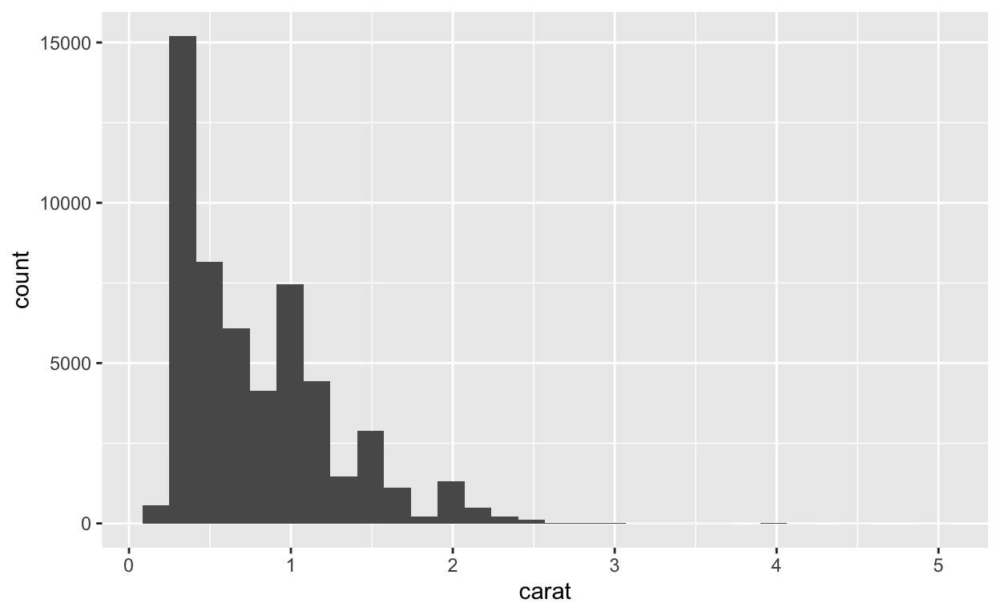
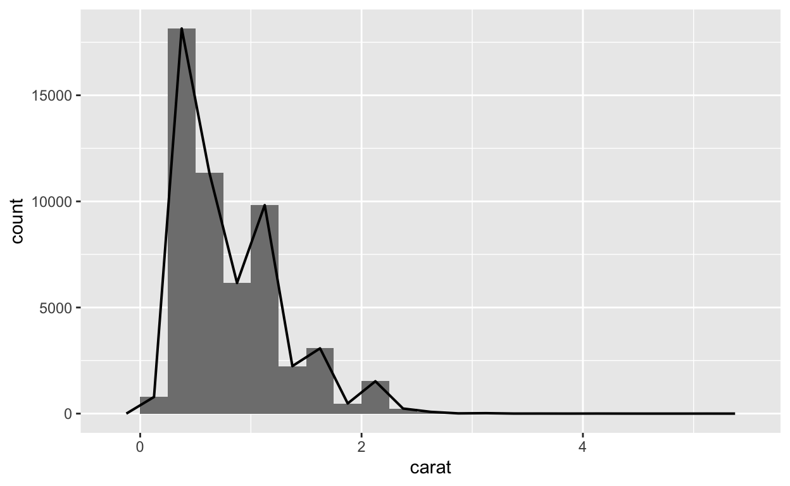
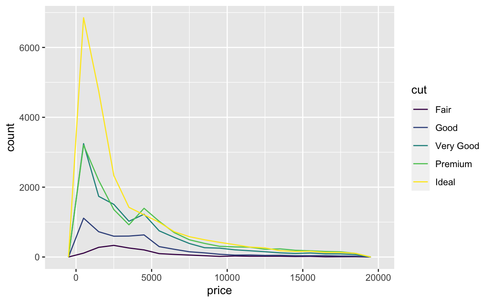
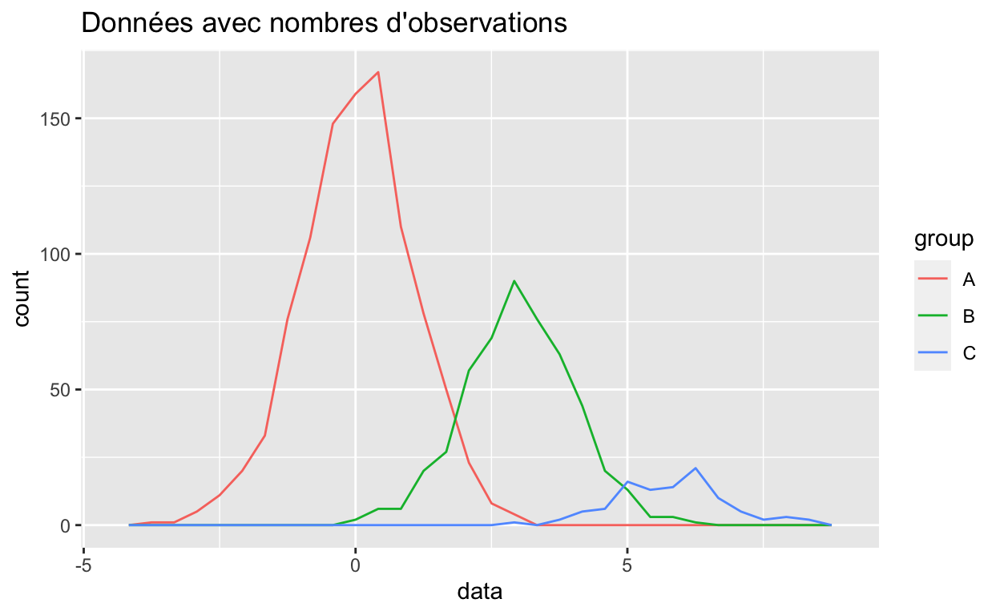
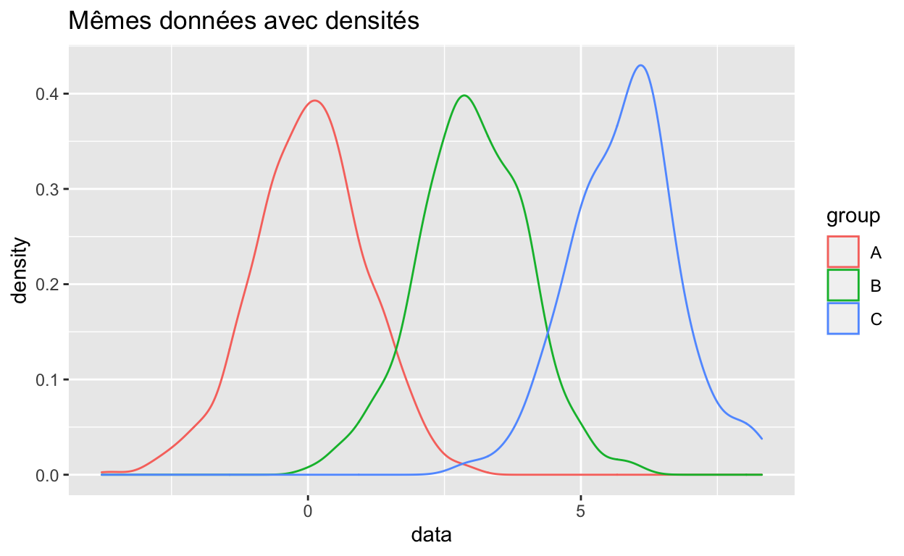
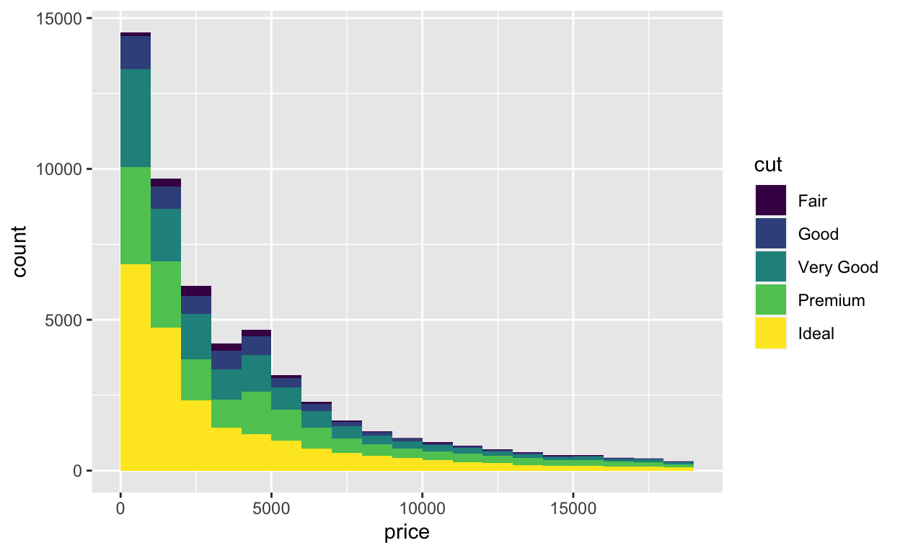

Bienvenue
Les histogrammes sont la façon la plus populaire de visualiser des distributions continues. Ici nous allons voir les histogrammes et leurs dérivés. Vous allez apprendre à :
- Faire et interpréter des histogrammes
- Ajuster le binwidth d’un histogramme pour révéler de l’information
- Utiliser des geoms similaires à l’histogramme, comme dotplots, frequency polygons, et densities
Ce module est adapté du livre R for Data Science d’Hadley Wickham et Garrett Grolemund, publié par O’Reilly Media, Inc., 2016, ISBN: 9781491910399. Vous pouvez obtenir le livre ici : shop.oreilly.com.
Ce module utilise les packages {ggplot2} et {dplyr}, qui ont été chargés pour votre convenance.
Histogrammes
Introduction
Comment faire un histogramme
Pour faire un histogramme avec {ggplot2}, ajoutez geom_histogram() au template {ggplot2}. Par exemple, le code ci-dessous produit un histogramme de la variable carat du jeu de données diamonds, qui est dans {ggplot2}.
ggplot(data = diamonds) +
aes(x = carat) +
geom_histogram()La variable y
Comme avec geom_bar(), vous n’avez pas besoin de donner une variable \(y\) à geom_histogram(). geom_histogram() va construire sa propre variable \(y\) en comptant le nombre d’observation dans chaque classe sur l’axe des \(x\). geom_histogram() va ensuite représenter le nombre d’observations sur l’axe des \(y\).

Ainsi, en regardant une barre, vous pouvez déterminer combien il y a d’observations dans chaque classe. Les classes avec une barre haute représentent des valeurs courantes de la variable \(x\).
Exercice 1 - Interprétation

Largeur des classes
Par défaut, {ggplot2} va choisir une largueur de classe pour votre histogramme d’environ 30 classes. Vous pouvez manuellement spécifier l’argument binwidth, qui est interprété dans l’unité de l’axe des x :
ggplot(data = diamonds) +
aes(x = carat) +
geom_histogram(binwidth = 1)Nombre de classes
Une alternative est de spécifier l’argument bins qui prend le nombre total de classes à utiliser :
ggplot(data = diamonds) +
aes(x = carat) +
geom_histogram(bins = 10)Il peut être difficile de déterminer la largueur des classes avec l’utilisation de bins, étant donné qu’il se peut que ce ne soit pas des nombres entiers.
Limites
Vous pouvez bouger les classes à droite ou à gauche sur l’axe des \(x\) avec l’argument boundary. boundary prend une valeur de \(x\) comme limite entre deux classes ({ggplot2} va aligner le reste des classes en fonction) :
ggplot(data = diamonds) +
aes(x = carat) +
geom_histogram(bins = 10, boundary = 0)Exercice 2 - binwidth
Lorsque vous utilisez geom_histogram(), il est recommandé de toujours expérimenter avec différentes valeurs de binwidth. En effet, différentes largeurs de classe peuvent révéler différents types d’informations.
Pour voir un exemple, faites un histogramme de la variable carat du jeu de données diamonds. Utilisez la largeur de 0.5 carats par classe. A quoi ressemble la forme générale de la distribution ?
"Bien ! La taille de diamants la plus courante est environ 0.5 carats. Les plus grandes tailles deviennent progressivement moins fréquentes. Ceci s'accorde avec la connaissance générale sur les diamants. Ainsi vous pourriez être tenté d'arrêter là votre exploration de la taille de carat. Mais est-ce une bonne idée ?"ggplot(data = diamonds) +
aes(x = carat) +
geom_histogram(binwidth = 0.5)Exercice 3 - une autre valeur pour binwidth
Recréez un histogramme de carat mais cette fois-ci avec des classe de 0.1 de largeur. Est-ce que ce graphique révèle de nouvelles informations ? Regardez de plus près. Y a-t-il plus d’un pic ? Où se trouvent ces pics ?
"Voilà ! La nouvelle largeur de classe révèle un nouveau phénomène : les carats de taille 0.5, 0.75, 1, 1.5, et 2 sont bien plus fréquents. Pourquoi ?"ggplot(data = diamonds) +
aes(x = carat) +
geom_histogram(binwidth = 0.1)Exercice 4 - encore une autre valeur de binwidth
Recréez votre histogramme une dernière fois, avec une largeur de classe de 0.1 et une limite à zéro. Essayez de trouver une nouvelle tendance dans ce graphique.
"Bien ! Cette nouvelle largeur de classe révèle encore un autre phénomène : chaque pic est déformé sur la droite. En d'autres termes, les diamants qui ont 1.01 carats sont bien plus communs que les diamants de 0.99 carats. Pourquoi ?"ggplot(data = diamonds) +
aes(x = carat) +
geom_histogram(binwidth = 0.01, boundary = 0)aesthetics
Visuellement, les histogrammes sont très ressemblants aux diagrammes en barres. Ainsi, ils utilisent les mêmes paramètres esthétiques : alpha, color, fill, linetype, et size.
Ils se comportent aussi de la même étrange façon lorsque vous utilisez la couleur. Vous souvenez-vous de ce qui se passait ?
Exercice 5 - Tout mettre ensemble
Recréez l’histogramme ci-dessous.

"Super ! Etes-vous sûr que chaque limite est de 1000 et que la première limite est à zéro ?"ggplot(data = diamonds) +
aes(x = price, fill = cut) +
geom_histogram(binwidth = 1000, boundary = 0)geoms similaires
Un problème
En ajoutant une couleur (avec fill) dans l’histogramme ci-dessous, nous avons divisé les données en cinq “sous-distributions” : la distribution du prix pour les diamants fair cut, pour les diamants good cut, very good cut, premium cut et ideal cut.

Mais il y a quelques limitations à cette façon de représenter :
- il est difficile de voir les formes des distributions individuelles.
- il est difficile de comparer les distributions individuelles, parce qu’elles n’ont pas la même première valeur pour \(y\).
Une solution
Nous pouvons améliorer le graphique en utilisant d’autres geom pour représenter les distribution des valeurs de prix. Il y a trois geom dans {ggplot2} qui représentent le même type d’information qu’un histogramme :
geom_freqpoly()geom_density()geom_dotplot()
geom_freqpoly()
geom_freqpoly() représente un polygone de fréquences, qui utilise une ligne pour représenter la même information qu’un histogramme. Vous pouvez voir un polygone de fréquences comme une ligne qui connecterait le haut de chaque barre d’un histogramme, comme ceci :

Notez que les barres ne font pas partie du polygone de fréquences ; elles sont présentes ici uniquement pour références. geom_freqpoly() reconnait les même paramètres que geom_histogram(), comme bins, binwidth, et boundary.
Exercice 6 - Polygones de fréquences
Créez le polygone de fréquences visible au dessus. Il a une largeur de classe de 0.25 et commence avec une limite à zéro.
"Bien ! En utilisant une ligne plutôt que des barres, les polygones de fréquences peuvent parfois représenter des choses que les histogrammes ne peuvent pas."ggplot(data = diamonds) +
aes(x = carat)
geom_freqpoly(binwidth = 0.25, boundary = 0)Exercice 7 - Polygones de fréquences multiples
Utilisez un polygone de fréquences pour recréer le graphique de price et cut. Etant donné que les lignes n’ont pas d’intérieur comme les barres, vous allez utiliser le paramètre esthétique color plutôt que fill.

"Bravo ! Etant donné que les lignes ne se masquent pas entre elles, `geom_freqpoly()` représente chaque sous-groupe avec la même base de référence : y = 0 (les sous-groupes ne sont pas au dessus les uns des autres). Cela fait qu'il est plus aisé de comparer les distributions. Vous pouvez maintenant voir que pour presque chaque valeur de prix, il y a plus de diamants avec une taille idéale que n'importe quel autre type de diamants."ggplot(data = diamonds) +
aes(x = price, color = cut) +
geom_freqpoly(binwidth = 1000, boundary = 0)geom_density()
Notre polygone de fréquences souligne une deuxième limitation de notre graphique : il est difficile de comparer les formes des distributions parce que certains sous-groupes comportent plus de diamants que d’autres. Ceci à pour effet de compresser les plus petits groupes dans le bas du graphique.

Vous pouvez éviter cela avec geom_density().
Courbes de densité
geom_density() représente une courbe de densité pour chaque distribution. Voilà une représentation lissée des données, similaire à un histogramme lissé.
Les courbes de densité ne représentent pas un nombre d’observations sur l’axe des \(y\) mais la densité. La densité est analogue au nombre d’observations en un point divisé par le nombre d’observations total. Les densités aident à comparer les distributions des sous-groupes. Lorsque vous représentez plusieurs sous-groupes, chaque courbe de densité va contenir la même aire sous la courbe.

Exercice 8 - Courbes de densité
Recréez le graphique avec les courbes de densités. Comment interprétez-vous les résultats ?

"Bien ! Vous pouvez à présent comparer les prix les plus communs pour chaque sous-groupe. Par exemple, le graphique montre que le prix le plus commun pour la majorité des diamants est proche de 1000$. Cependant, le prix le plus commun pour les diamants de taille fair est largement au dessus, environ 2500$. Nous reviendrons sur cette bizarrerie dans un autre module."ggplot(data = diamonds) +
aes(x = price, color = cut) +
geom_density()Paramètres de densité
Les graphiques de densité ne prennent pas les paramètres bin, binwidth, et boundary. A la place, ils reconnaissent des paramètres de noyau et de lissage qui sont utilisés dans l’algorithme d’ajustement de densité, qui est assez sophistiqué.
En pratique, vous pouvez obtenir rapidement des résultats utiles avec les paramètres par défaut de geom_density(). Si vous voulez en apprendre d’avantage sur les estimations de densité et les paramètres qui permettent de les régler, commencez avec la page d’aide de R avec ?geom_density().
geom_dotplot()
Il y a un dernier geom dans {ggplot2} qui représente des distributions uni-dimensionnelles : geom_dotplot(). geom_dotplot() représente chaque observation avec un point, puis empile les points au sein des classes pour créer un semblant d’histogramme.
Les diagrammes de points peuvent fournir une représentation intuitive des données, mais ils ont quelques limitations. Les diagrammes de points ne sont pas idéaux pour de larges jeux de données comme diamonds, et fournissent des légendes des axes \(y\) qui n’ont pas de sens. De plus, les paramètres de réglages de geom_dotplot() font que ces diagrammes sont lents à travailler lors de l’analyse exploratoire des données.
ggplot(data = mpg) +
aes(x = displ) +
geom_dotplot(dotsize = 0.5, stackdir = "up", stackratio = 1.1)Exercice 9 - Facettes
Au lieu de changer les geom, vous pouvez faire en sorte de pouvoir comparer vos sous-groupes en utilisant des facettes. Modifiez le code ci-dessous pour faire des facettes par taille (cut).
ggplot(data = diamonds) +
aes(x = price, fill = cut) +
geom_histogram(binwidth = 1000, boundary = 0)"Voilà ! Les facettes permettent de comparer les sous-groupes. Par contre, les données sont séparées. Vous pouvez décider si les polygones de fréquences ou les densité permettent de mieux faire les comparaisons."ggplot(data = diamonds) +
aes(x = price, fill = cut) +
geom_histogram(binwidth = 1000, boundary = 0) +
facet_wrap( ~cut)Récapitulatif
Dans ce module, vous avez appris à visualiser des distributions avec des histogrammes, des polygones de fréquences et des densités. Mais que devez-vous rechercher dans ces visualisations ?
Rechercher là où il y a beaucoup de données. Les barres hautes révèlent les valeurs les plus communes dans le jeu de données. Vous pouvez vous attendre à ce que ces valeurs soient des “valeurs typiques” de votre variable.
Rechercher là où il y a peu de données. Les barres courtes révèlent les valeurs peu communes. Ces valeurs apparaissent rarement et vous serez sûrement capable de savoir pourquoi.
Rechercher les outliers. Les barres qui apparaissent en dehors de la majorité du reste de données sont des outliers (= données aberrantes), des cas spéciaux qui peuvent révéler des informations inattendues.
Parfois, les outliers ne sont pas visible dans un graphique, mais ils peuvent être déduits de l’échelle des \(x\). Par exemple, beaucoup de graphiques dans ce module semblent être étendus bien au delà des données. Pourquoi ? Parce que l’échelle à été étirée pour inclure les outliers. Lorsque votre jeu de données est grand, comme diamonds, la barre qui décrit un outlier peut être invisible (moins que la hauteur d’un pixel).
Rechercher les clusters.
Rechercher les formes. La forme d’un histogramme peut souvent indiquer si une variable se comporte selon une distribution de probabilité connue.